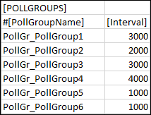

POLL GROUPS
[POLLGROUPS]
Allows you to import poll groups to the system.

Item | Description |
Poll Group Name | Name of the poll group to be imported in the system. The name of the poll group must begin with the following mandatory prefix: PollGr_. The poll group is not created in the system if the prefix is missing. |
Interval | Time interval for the poll group. |
Important Points to consider for Poll Group Import
- Poll groups are applicable only to the points where the Direction field is set to Input.
- If the [POLLGROUPS] section is available in the CSV file but there are no poll groups assigned to the points, all poll groups listed in the [POLLGROUPS] section will be imported into the system. After import, they will be added to the following location, Project > Management System > Servers > Main Server > Poll Groups.
- If the poll groups assigned to the points are listed in the [POLLGROUPS] section, the poll groups will be added to Project > Management System > Servers > Main Server > Poll Groups and assigned to the respective points after the import of the CSV file.
- A poll group listed in Project > Management System > Servers > Main Server > Poll Groups, but not listed in the [POLLGROUPS] section in the CSV file is associated with a point in the CSV file, then the poll group is assigned to the point after import. If the poll group is neither available in the Poll Groups folder nor listed in the [POLLGROUPS] section, an error message will be issued on parsing the CSV file.
- If a data point with input direction does not have a poll group assigned or the assigned poll group is not available in the CSV file or in the Project > Management System > Servers > Main Server > Poll Groups node, the poll group specification is taken from the network node during the import of the CSV file.
- If an existing poll group that is not listed in the [POLLGROUPS] section, but is present in Project > Management System > Servers > Main Server > Poll Groups, is associated with a point in the CSV file, then the poll group will be is assigned to the point in the system after import.